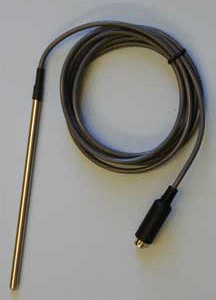
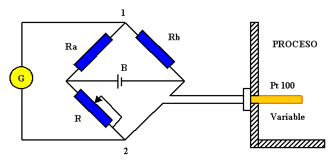
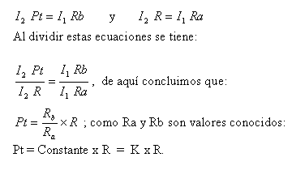

TERMOMETROS DE RESISTENCIA
| Todos los materiales metálicos cambian su resistencia cuando varia su temperatura , ahora bien unos lo hacen en mayor proporción que otros, de acuerdo a las características de resistencia en función de la temperatura del material, que a su vez depende de la composición metalúrgica del material de la sonda. Prácticamente pueden connstruirse sondas de cualquier material, sin embargo es necesario observar que la curva de resistencia en función de la temperatura sea lo más lineal posible y que la sensibilidad sea significativa, es decir que un pequeño cambio de temperatura proporcione una considerable variación de la resistencia. Los materiales que presentan estas características son el Cobre, el Platino y el Niquel, por ello los fabricantes de sensores de temperatura utilizan estos materiales para sufabricación. El sensor en si no es más que un hilo muy fino de material que se enrrolla sobre un núcleo de material aislante y se recubre herméticamente con una funda de protección de vidrio, cerámica, metal o combinaciones de éllos. Los extremos libres deben conectarse a un instrumento que mida la resistencia del conductor y de forma indirecta se obtiene la temperatura, ya que en realidad este instrumento mide el cambio de resistencia éctrica causada por la variación de temperatura. |
 |
El gráfico siguiente muestra un circuito galvanométrico para medir resistencias.
|  |
- Ra y Rb Son resistencias conocidas.
- R es un reóstato.
- Pt es la resistencia a medir.
- G es el galvanómetro.
- B es una batería.
Cuando el puente esta equilibrado el voltaje en los puntos 1 y 2 será el mismo y por tanto puede decirse que:

Según lo anterior Pt puede conocerse si se tiene el valor de R cuando el galvanómetro esta en cero o lo que es igual si el puente esta equilibrado.
Las sondas de resistencia normalizadas traen tabulados los valores de resistencia según la temperatura.
La tabla muestra los valores de resistencia para la sonda Pt 100, que es de platino y a 0 C tiene una resistencia de 100 ohmios.
Extisten otras sondas como son la Pt. 200 y Pt 500 que a 0 C poseen resistencias
de 200 y 500 ohmios respectivamente.
Los valores de la tabla Pt 100 son validos para las sondas Pt 200 y Pt 500 si multiplicamos por 2 y 5 respectivamente.
Son termómetros de respuesta casi inmediata con precisiones del 1% y hasta 0,01% del alcance.
La sonda puede estar ubicada hasta 180 m. alejada del indicador o registrador.
Son cápsulas selladas que no admiten reparación.